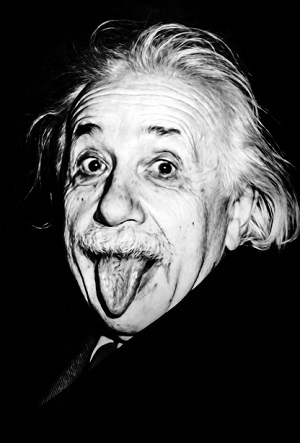
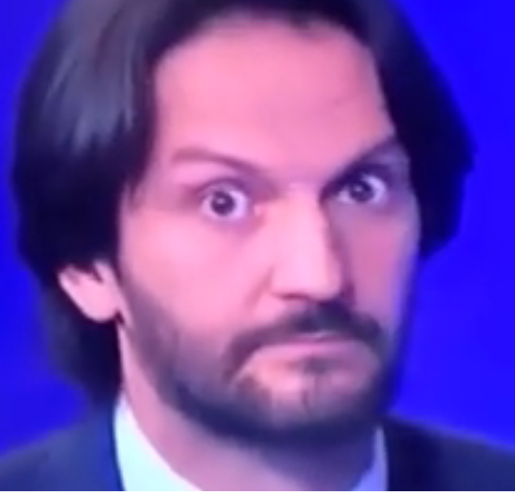
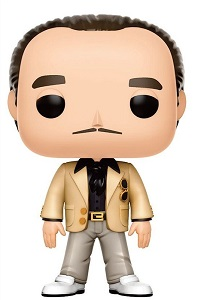

| poradie | názov filmu | rok vydania | hodnotenie v percentách |
|---|---|---|---|
| 1 |
Vykúpenie z väznice Shawshank
Janko Hraško |
1994 | 95,3 % |
| 2 |
Forrest Gump
Janko Hraško |
1999 | 94,5 % |
| 3 |
Zelená míľa
Janko Hraško |
1999 | 92,9 % |
| 4 |
Krstný otec
Janko Hraško |
1972 | 91,8 % |
| 5 |
Vykúpenie z väznice Shawshank
Janko Hraško |
1994 | 91,3 % |
| 6 | Vykúpenie z väznice Shawshank | 1994 | 95,3 % |
| 7 | Forrest Gump | 1994 | 94,5 % |
| 8 | Zelená míľa | 1999 | 92,9 % |
| 9 | Krstný otec | 1972 | 91,8 % |
| 10 | Vykúpenie z väznice Shawshank | 1994 | 91,3 % |
| 11 | Vykúpenie z väznice Shawshank | 1994 | 95,3 % |
| 12 | Forrest Gump | 1994 | 94,5 % |
| 13 | Zelená míľa | 1999 | 92,9 % |
| 14 | Krstný otec | 1972 | 91,8 % |
| 15 | Vykúpenie z väznice Shawshank | 1994 | 91,3 % |
| 16 | Vykúpenie z väznice Shawshank | 1994 | 95,3 % |
| 17 | Forrest Gump | 1994 | 94,5 % |
| 18 | Zelená míľa | 1999 | 92,9 % |
| 19 | Krstný otec | 1972 | 91,8 % |
| 20 | Vykúpenie z väznice Shawshank | 1994 | 91,3 % |
Skutečný vězeň Frank Freshwaters, přezdíván „The Shawshank Fugitive“, byl v roce 2015 po 56 letech dopaden, ovšem o rok později byl s pětiletou podmínkou propuštěn na svobodu. Přezdívku získal, protože utekl z věznice Ohio State Reformatory v Mansfieldu, ve které byl natáčen film Vykoupení z věznice Shawshank. Devětasedmdesátiletý muž, který utekl z vězení v roce 1959, unikal 56 let dvacetiletému trestu, ze kterého si odseděl pouhé dva roky. Podle právníka vedl Freshwaters po svém útěku z vězení spořádaný život. Nikdy prý nezapomněl na automobilovou nehodu z roku 1957, při které zabil čtyřiadvacetiletého chodce Eugenea Flynta, a která ho posléze dostala do vězení. (Hawaj)
Andy Dufresne (Tim Robbins) je mladý a úspěšný bankéř. Jeho život se drasticky změní poté, co je odsouzen k trestu dvojnásobného doživotí za vraždu manželky a jejího milence. Andy je ovšem jediný, kdo ví, že zločiny nespáchal. Andy, který je v civilním životě mlčenlivý bankéř, je poslán do věznice Shawshank, aby si trest krutě odpykal, a musí se naučit probít nelítostnými podmínkami za zdmi vězení, kde je život často na ostří nože.